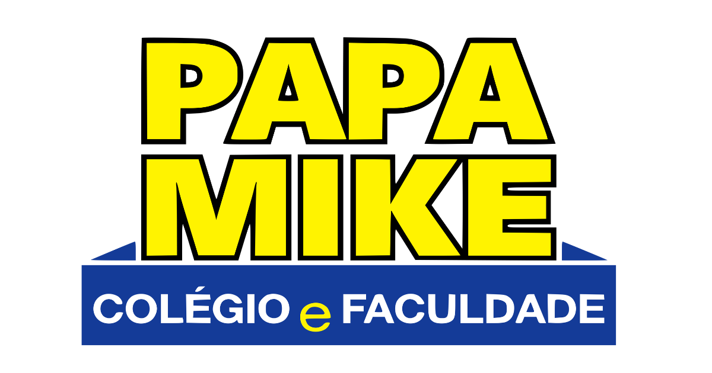
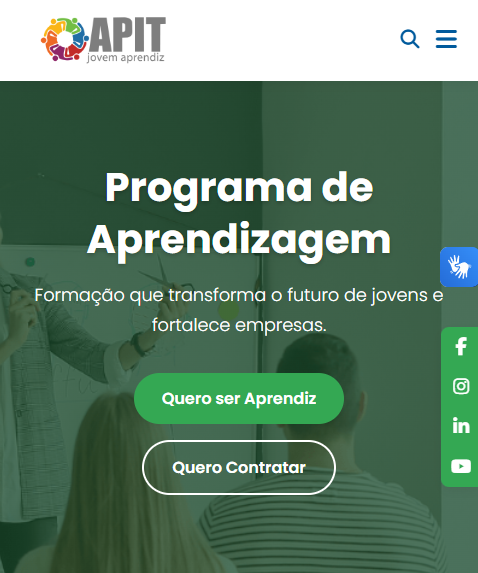
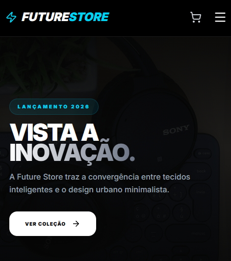

Ecossistema Papa Mike
O cliente precisava organizar uma operação complexa que envolvia muitas planilhas e comunicação espalhada. Desenvolvi um sistema completo que atua como o "coração da escola". Ele unifica o painel de matrículas, organiza a equipe comercial e simplifica o controle financeiro.
- Fim das perdas de dados em planilhas manuais.
- Equipe de vendas focada em uma única tela.
- Relatórios financeiros gerados automaticamente.

Intranet Suplax
O foco deste projeto foi criar a "casa digital" do colaborador. Construí um portal interno restrito onde os funcionários têm acesso a tudo que precisam para o dia a dia da empresa, melhorando drasticamente a comunicação do RH e da T.I com a equipe.
- Mural de avisos e visualizador do cardápio diário.
- Central de solicitação de documentos diretamente ao RH.
- Abertura de chamados de T.I vinculados ao perfil do usuário.

Portal APIT (Jovem Aprendiz)
Uma ponte digital entre talentos e empresas. O desafio era criar uma plataforma ágil e intuitiva onde jovens pudessem cadastrar seus currículos facilmente e, do outro lado, empresas parceiras pudessem divulgar vagas e encontrar o candidato ideal.
- Facilidade para jovens criarem e enviarem currículos.
- Gestão simples de vagas para os recrutadores.
- Design limpo e carregamento super rápido.

Lojas Virtuais & E-commerce
Criação de lojas virtuais que funcionam como máquinas de vendas 24h por dia. Todo o ambiente é construído para passar segurança ao comprador, com integrações automáticas que facilitam a vida do lojista.
- Pagamento seguro via Mercado Pago (PIX, Cartão, Boleto).
- Carrinho de compras intuitivo e fácil de usar.
- Painel administrativo para gerenciar estoque e novos produtos.
Landing Pages e Sites (Papa Mike)
Um site não pode ser apenas bonito, ele precisa gerar resultados. Construo páginas focadas 100% em captar contatos ou vender serviços. Exemplos como "Papa Mike Saúde" e "Matrículas Kids" foram desenhados para guiar o olhar do cliente diretamente para a ação (compra ou cadastro).
- Botões estratégicos e chamadas para ação (CTAs) claras.
- Adaptação perfeita para visualização em celulares.
- Preparado para campanhas de anúncios (Google Ads, Facebook).
Viu como posso ajudar seu negócio?
Se você tem um problema na sua empresa, provavelmente existe uma solução digital para resolvê-lo. Vamos bater um papo sem compromisso.
Iniciar Meu Projeto